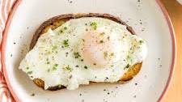

Basted Eggs

Somewhere between a sunny side up fried egg and a poached egg
Ingredients
- 1 ½ tablespoons salted butter
- 2 large eggs
- 1 tablespoon water
- ⅛ teaspoon freshly ground black pepper
- 1 pinch flaky sea salt, or to taste
Steps
- Melt butter in a medium nonstick skillet over medium heat. Carefully crack eggs
nto the skillet and let cook until whites have almost set, about 1 minute.
- Add water, cover skillet with a lid or cookie sheet, reduce heat to medium-low.
- Let cook until whites have set, yolks are still runny, and some of white has set over yolk,
1 to 2 more minutes. Remove lid and transfer eggs to a serving plate.
Garnish with pepper and flaky salt, if desired. Serve immediately.
Home